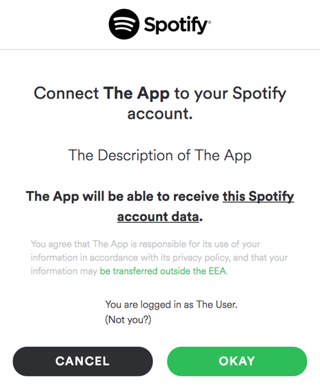
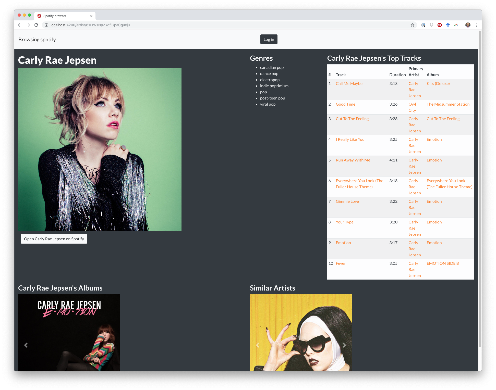
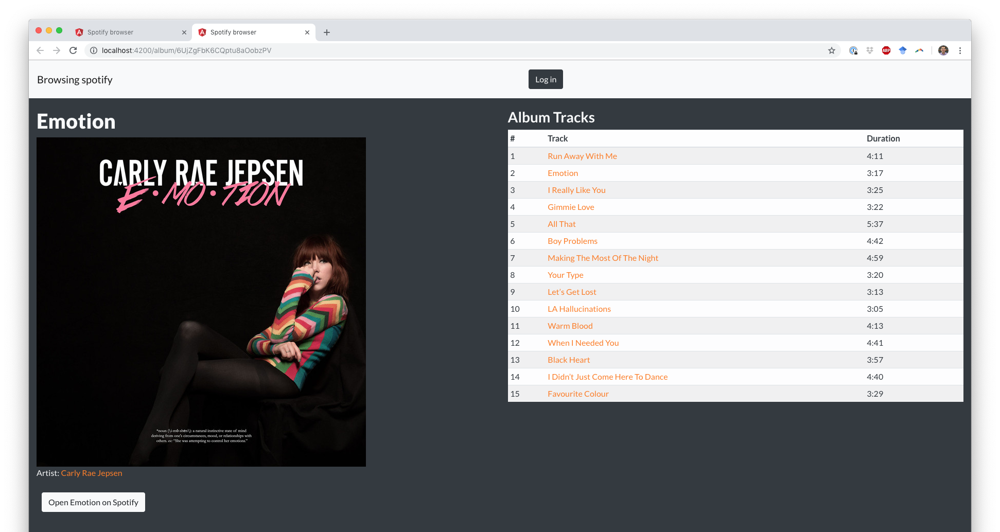
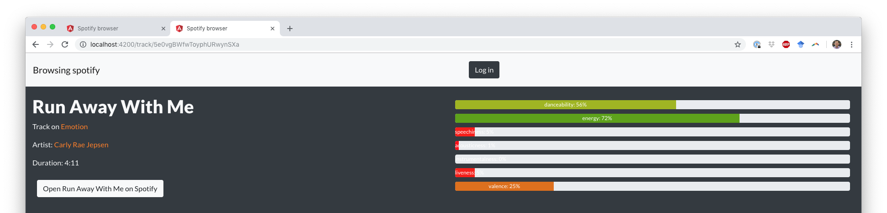

A3: Spotify Browser in Angular#
Overview#
In this assignment, you’ll demonstrate your ability to (1) gather data from an API, and (2) develop a frontend interface which displays the data. You’ll use Angular to create a webpage which communicates with a backend server written in Node.js/Express to browse the music on Spotify, a popular music streaming app. The provided backend server will handle authentication via OAuth and communicate with the Spotify API, but you will have to make HTTP requests to the backend server to trigger API calls. Your page will support searching for artists, albums, and tracks and navigating between the three resources.
Assignment Details#
Starter code#
A starter repository is on GitHub Classroom.
Repository Structure#
The repository contains somewhere around 80 files. You will not need to edit most of them in this assignment. The repository contains two folders: webserver and client-starter. webserver includes the Express/Node.js backend for communicating with the Spotify API. client-starter includes the Angular frontend core for browsing music.
In the backend (webserver folder), you will not need to edit any of the JavaScript files; they are provided for you. However, you do need to create two files:
client_secret.json
tokens.json
Both files contain secret information, so they should not be committed to the repository and are therefore listed in the .gitignore file. (Which is also why we cannot provide them to you)
In the frontend (client-starter folder), the files which need editing are all under the app folder. Within that folder, the files/subfolders you should edit are:
The six components in the components folder:
about,carousel,carousel-card,search,track-list, andthermometer. Each component folder contains four files (*.component.css,*.component.html,*.component.ts,*.component.spec.ts). Of these files, all edits will be made in the.component.htmland.component.tsfiles.Three of the four components in the pages folder:
album-page,artist-page, andtrack-page.home-pagewill not be edited. Again, all edits will be made in the.component.htmland.component.tsfiles.The one service in the services folder:
spotify-service. All edits will be made in the.service.tsfile, none in the.service.spec.tsfile.One of the six classes in the data folder:
track-features.ts. The four other classes do not need to be edited.
Note that the app folder and the assets folder located within the client-starter folder will eventually be moved into your main project (See below).
Finally, as with other assignments, you will also edit the readme.txt file in the root folder.
This assignment can be completed without writing any additional files or functions. But you may find it helpful to add a file or function, such as to complete one of the bonus features.
Setting up your Workspace#
If you’re feeling unfamiliar with the command line, you might find the guides in the resources page helpful.
Some of the packages/libraries depend on newer versions of Node JS. Check what version of Node JS you have installed with:
node --version
If you installed Node JS before this class, make sure you’ve updated to at least 20.11.0, such as with nvm or downloading the latest version from the node website. If you installed Node during A2, you should not need to update, but it’s probably worth checking the version number anyways as this assignment has been tested against the version latest LTS version.
There are no global dependencies required to run the Express webserver, but you will need to install the dependencies for the webserver since they are not packaged with the server on Github. These dependencies are defined in the project’s package.json files. cd into the webserver folder and install the dependencies with:
npm install
When installing, if you run into issues which look like “permission denied, try changing the permissions of the node_modules directory. If you are still having trouble, ask on Slack or talk to the course staff. It’s important to try to get the setup working sooner rather than later, even if you do not plan on working on the assignment until close to the deadline.
Running the Webserver#
A Spotify Developer account is required to set up the Express webserver. Create a Spotify account or log in at https://developer.spotify.com/dashboard/ and follow the instructions to create a client id. Name the app whatever you’d like. For the App description, enter:
This App is used to create a music browser as part of a course assignment for IN4MATX 133, User Interface Software, at the University of California, Irvine.
Indicate that you are building a Website and are not developing a commercial application.
Once you have created your application, be sure to set the redirect URI to:
http://localhost:8888/callback
This will tell Spotify to redirect back to our Express webserver once authentication and authorization is complete. You should also create a file in the webserver folder (not the routes folder), client_secret.json, with your consumer key and secret. It should be of the form:
{
"client_id": "Your Client Key",
"client_secret": "Your Client Secret"
}
At this time, also create a placeholder file in the same folder for tokens.json. This file will be overwritten once an access and refresh token have been retrieved. Your tokens.json file should be exactly:
{
"access_token": null,
"refresh_token": null
}
To run the Express webserver, cd into the webserver folder and run: npm start
This will start the webserver at:
localhost:8888
Be sure the dependencies have been installed first via:
npm install
If you make a change to code in the webserver (which you should not need to do to complete the required portions of this assignment), you will have to end the running program and re-run it. End it by typing Ctrl-C into the command line and then re-running it with:
npm start
Preparing the client#
For the client, you will need to install Angular through npm. To do this, you will install the Angular Command Line Interface (CLI) globally with:
npm install -g @angular/cli
From your project root (wherever you cloned the starter code) run the following command from your command line tool:
ng new client
Follow the new project wizard by using the following configuration:
Which stylesheet format you would like to use? SCSS
Do you want to enable Server-Side Rendering (SSR) and Static Site Generation (SSG/Prerendering)? No
If you make mistake, just delete the client folder and start over.
Once your project is ready, open up index.html and add the Bootstrap CDN to the head:
<link rel="stylesheet" href="https://stackpath.bootstrapcdn.com/bootstrap/4.1.3/css/bootstrap.min.css" integrity="sha384-MCw98/SFnGE8fJT3GXwEOngsV7Zt27NXFoaoApmYm81iuXoPkFOJwJ8ERdknLPMO" crossorigin="anonymous">
Be sure to use the version linked above as we make use of features that are no longer available in the latest version of Bootstrap.
While you are working on the index.html page, update the title to give your app a more personal name!
Next, you will want to bring in the various pages, service, and components already prepared for you in the client-starter folder. So copy (or move) both the app and assets folders in client-starter into your newly created client folder. Be sure to overwrite any existing files.
The track-feature data class makes use of the chroma-js library to mix colors for track data in the app. Support for chroma-js will need to be added by installing the library and uncommenting relveant code in the track-feature.ts file.
Be sure to cd into your client folder, then install the chroma-js library and add TypeScript types support:
npm install chroma-js
npm i --save-dev @types/chroma-js
Finally, you will need to enable http communication in Angular so that you can make get requests with the proxy server. Open your app.config.ts file and add the following provider to your providers dictionary (be sure to separate from any existing providers with a comma!):
provideHttpClient()
You are now ready to run the client!
Running the client#
To run the Angular client, cd into the client folder and run:
ng serve --open
This will start the client at localhost:4200. Adding the --open flag will open it up in the browser. Be sure the dependencies have been installed first via npm install.
Any code changes will be automatically reloaded on the client.
Note
The ‘–open’ switch is optional, and you might prefer to remove it once you have a browser window open for your app.
Working in pairs#
If you are completing the assignment in pairs, you should work in one shared GitHub repository. The easiest way to do this is to have one of you create the repository and add the other as a collaborator.
The downside of working in pairs is that you open yourself up to potential issues merging one person’s code into another. Make sure you always update the version of the code on your computer prior to beginning work. This guide offers some suggestions for how to resolve potential conflicts which might arise. But more generally, we suggest that you complete this assignment via pair programming, alternating roles as drivers and navigators.
If you do work in pairs, you will use the groups feature in Canvas to support your work. DO NOT create a student group. Use one of the empty groups available to you in the a3 groups tab in the People section of Canvas.
Requirements#
There are six parts to this assignment. The later parts use many of the same components, so once those are implemented the later parts become a matter of gluing them together. You can also optionally add one of a number of bonus features.
Part 1: Communication with the Webserver (2 points)#
The first time you push the “login” button in the top-right corner of the Spotify browser, you will be redirected to Spotify to authenticate and authorize access to your app. The OAuth flow between the Spotify server and the webserver has been implemented for you. That means that once you authenticate and authorize access, you can query the webserver to make API requests on your behalf. The webserver will also handle refreshing the access token when it expires. Hooray!

However, in order to make API requests, you will need to add some functionality to the Spotify Service (services/spotify.service.ts). First, update the sendRequestToExpress function in the Spotify service to ask the Express webserver to make an API request to Spotify at the endpoint passed in. The endpoints should then return the appropriate data type for each API call. You will be able to test your function by building out the pages in the assignment.
Part 2: Spotify Browser Home Page (5 points)#
In this part, you will create a homepage to view some information about the logged in user’s account. You will also create search requests to the Spotify API. As you get started with Angular, it may be helpful to review the code from the demos or the lecture recordings.
Populating Information About the User (2 point)#
Once API requests can be made via the Express server (Part 1), edit the about component to call the endpoint created for the “about me” page when the load info button is clicked. To do so, you will need to inject the Spotify service you just edited. The Spotify API endpoint reference describes what this endpoint and other endpoints return. Update the variables in the component’s .ts file and bind them to the appropriate places in the .html file. This will populate the left side of the home page with the logged in user’s name, profile picture, and a link to open their profile on Spotify.com.
Populating the Search Component (3 points)#
The right side of the page contains the search component. The search component contains an input and a select (dropdown) menu to declare what to search for. Bind the values in the component’s model to the input and select controls. Bind the search button to a function which uses the Spotify service to have Express make the API request. You can also search online to learn how to trigger a search when a user presses “enter” in the input field or changes the dropdown menu. These two features are optional–you are only required to bind the search button. For simplicity, your code can assume that any search typed in is valid (e.g., returns at least one artist/track/album).
Map the response from Express into an array of the appropriate resource type–ArtistData, AlbumData, or TrackData. To do so, you will have to update the Spotify Service to create objects based on the category being searched for. Similar to the example given for parsing ProfileData, the constructor of each resource can automatically parse the dictionary values Spotify returns into an Object. For example, AlbumData loads the genres of the Album and creates an array with each of the artists on the album. Note that all three of these resource classes extend the ResourceData class, which parses some dictionary values common across all the resource types. You should not need to edit any of these four files; contact the course staff if a response parses differently than you would expect or causes an error.
Once the array of resources has been created, display the search results in either a carousel component (for artists or albums) or a track-list component (for tracks).
The carousel is implemented via a Bootstrap carousel. Edit the carousel component to create carousel-card components for each resource passed in. Additionally, edit the carousel-card component to link to the local URL for browsing the specific artist or album. Check the app router (app-routing.module.ts) to identify what the URL should be.
The track list is implemented in the track-list component. Edit the component to display each track in the response as a row in the component’s table, displaying the track’s index, name, duration, artist, and album. The component should support hiding the artist and/or album columns for the track when the hideArtist or hideAlbum variables are true.
Part 3: Spotify Browser Artist Page (4 points)#
In this part, you will create a page to view some information about a searched-for or linked-to artist. You will update the artist-page component to do this. For simplicity, you can assume the id passed via the URL is always valid (e.g., always refers to an artist which exists in the Spotify API). The artist-page includes code for retrieving the artist’s id from the URL.

Update the Artist Page to retrieve the basic information about the artist, their top tracks, their albums, and similar artists. The Express webserver has endpoints for each of these four requests. Update the component to display the information as described in the component’s template. You will re-use the track-list and carousel components on this page.
You will again have to update endpoints in the Spotify Service to get information about an artist, their top tracks, albums, etc.
Part 4: Spotify Browser Album Page (3 points)#
In this part, you will create a page to view some information about a searched-for or lined-to album. You will update the album-page component to do this. For simplicity, you can assume the id passed via the URL is always valid (e.g., always refers to an album which exists in the Spotify API). The album-page includes code for retrieving the album’s id from the URL.

Update the Album Page to retrieve the basic information about the album and it’s tracks. The Express webserver has endpoints for each of these two requests, which you will again need to call in the Spotify service and parse data from. Update the component to display the information as described in the component’s template. You will re-use the track-list component on this page.
Part 5: Spotify Browser Track page (3 points)#
In this part, you will create a page to view some information about a searched-for or lined-to track. You will update the track-page component to do this. For simplicity, you can assume the id passed via the URL is always valid (e.g., always refers to a track which exists in the Spotify API). The track-page includes code for retrieving the track’s id from the URL.

Update the Track Page to retrieve the basic information about the track and it’s audio features. The Express webserver has endpoints for each of these two requests. Update the component to display the information as described in the component’s template.
For this page, you will have to edit the thermometer component. The thermometer uses a Bootstrap progress bar to display the track’s audio features. Note the component does not have any Input fields, so you will have to identify what fields you need and define them.
You can edit the track-feature class to use the chroma library to display the progress bar’s color as a mix between two values depending on it’s percent. The provided mixes between red and green. You can choose whatever colors you like, so long as differences are visually distinct. HSL blending is recommended, as it more closely models how human vision blends colors.
Part 6: Spotify Browser Top Tracks page (3 points)#
By now you should have a solid grasp on how Angular works. To demonstrate your understanding, you will create your own custom page that displays the top tracks for the current user.
To complete this requirement you will have to carry out the following steps:
Review the
index.jsfile located in theroutesfolder in the webserver. Look for the top tracks route and record the endpoint.Create a new page component to display your top artist data using the
ng generate componentcommand. You should stick with existing organizational conventions when determining where to place the page component. Your page should also take advantage of CSS styling to make the organization and display of the tracks and track data engaging (e.g., bootstrap cards). We expect more than a simple unordered list of text!Link to your top tracks page from the home page. There are a number of ways to satisfy this requirement. We don’t particularly care how you link, only that you do. When running your program a person should see a link to view their top tracks.
Your page should follow all existing conventions. This means that to integrate this new data you may need to modify an existing data class (e.g., ProfileData) or create a new one and update the Spotify service class.
There is a lot of flexibility for this requirement, so don’t get to hung up on fulfilling requirements. Just get the page working and have fun with it!
Optional/Bonus Features#
The six parts of the assignment create a tool for browsing the Spotify API. There are many ways of extending this browser, and we can offer one point of extra credit for implementing an extension. We’ve enumerated some potential extensions:
Moving the Express webserver to a publicly visible URL rather than running on localhost. One way of doing this would be to create a Heroku instance. Students can get a free Hobby-tier server on Heroku for two years. This guide may be helpful for deploying your heroku app.
The webserver for this assignment can only handle a single user because tokens are being saved in a JSON file with no user information. Use session middleware and an improved scheme for storing tokens to handle multiple users.
Adding a component which plays music for an Artist/Album/Track using Spotify’s Web Playback SDK. You can add the player to any page within your Spotify browser.
We are open to other suggestions for bonus features.
Submitting#
To submit, zip your repository and upload it to Canvas. Any late uploads are subject to the course’s late policy.
Please update your readme.txt with how long the assignment took, who or what online resources you consulted with, any bonus features you added, and anything else we should know.
Grading#
This assignment will be graded on a scale of 20 points, broken down as follows:
Communication with the Webserver (2 points)
Spotify Browser Home Page (5 points)
Spotify Browser Artist Page (4 points)
Spotify Browser Album Page (3 points)
Spotify Browser Track Page (3 points)
spotify Browser Custom Page (3 points)
A bonus feature completed will earn you 1 point of extra credit (e.g., no points given for beyond one bonus feature). The maximum grade for this assignment is therefore 21/20.
In prior courses, you’ve been asked to follow good principles for indentation, naming variables, commenting, etc. We expect you to do the same in this course, but aim to avoid being draconian in our enforcement of these principles. Egregiously poor formatting, completely uncommented code, etc. may incur a small penalty (e.g., -1 point), but we expect this to be rarely applied.